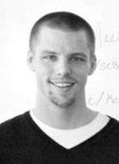

 Beau Cameron graduated from University of Vermont in 2011 with a B.S in Computer Science and Information Systems. A member and captain of the UVM Track and Field team, Beau was active on campus both on and off the track.
While at UVM, Beau Co-Founded CS Crew - a student run organization designed to support not only the Computer Science community, but the entire UVM community. CS Crew was founded to provide academic support to students, as well as provide an environment where collaboration and exploration give birth to new skill sets.
As a teaching assistant for two introductory level programming classes, Beau found it very rewarding to mentor and collaborate with other students in the department.
Beau earned real life experience through various internships while in college. He interned at MyWebGrocer and Competitive Computing in Colchester, VT, during his junior and senior years at UVM.
Because of his efforts in the CS Crew, Beau was recognized in 2011 with the ACM Faculty award during graduation. Beau took his degree and started his career as a software engineer at Competitive Computing. He primarily is a software developer for desktop applications and enterprise content management systems. He specializes in Sitefinity and is a Microsoft SharePoint evangelist/developer.
Beau believes the University and the CS Crew provided a diverse learning environment that allowed him to quickly learn enterprise technologies, "best practice" standards and evolve into a very agile developer.